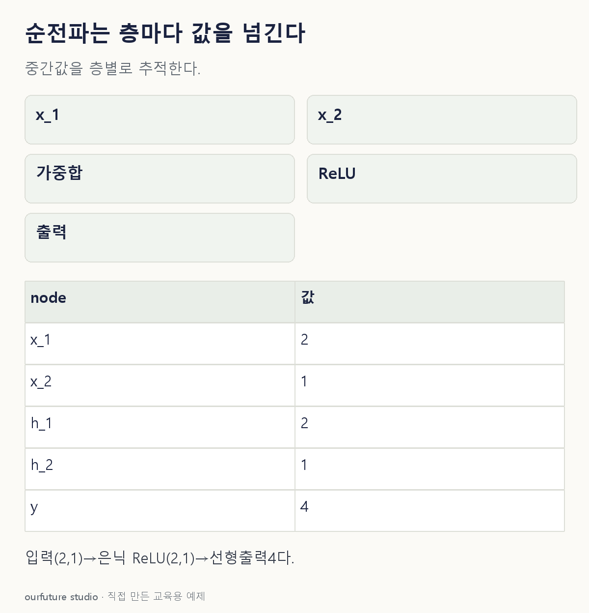

조건을 바꾸며 확인하기
주어진 가중치·항등 출력층을 고정한다. 학습·분류확률 계산이 아니다.
설명 그림과 비교하기
아래 그림과 표는 고정된 설명 예제입니다. 기본·변형 중 어떤 조건인지 캡션을 읽고, 바꾼 입력의 결과는 계산 칸에서 확인하세요.

같은 문제를 직접 골라 보기
x=(2,1). h₁=ReLU(x₁+x₂−1), h₂=ReLU(x₁−x₂), y=h₁+2h₂.
조건을 더 바꾸면?
입력만 x=(1,2)로 바꾸면 최종 출력은?
변형 풀이 확인
2.
h₁=ReLU(2)=2, h₂=ReLU(−1)=0이다. 최종값은 2+2×0이다.
가중합 뒤 활성화, 그 출력이 다음 입력.